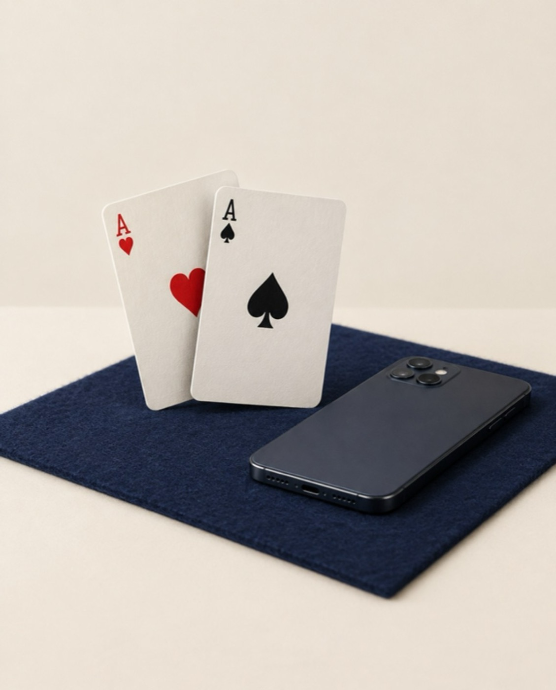

As Marketing Manager at The Orange Cup, I helped PokerBaazi build a well-planned influencer strategy with well-known names, and the creator tie-ups proved fruitful for the brand.

PokerBaazi
Online gaming
The Orange Cup
Marketing Manager
Influencer marketing
Online poker is a category where trust matters: audiences want to hear from people they already know and respect, not just from the brand.
The brief was to bring recognised names on board and plan the partnerships as a strategy, rather than a scattered set of sponsored posts.
I worked on curating the creator line-up and planning how the tie-ups would run together as one campaign.
Selecting well-known creators whose credibility and audience fit the brand, so every partnership added trust.
Planning how the tie-ups worked together across the campaign, from timing to message, so the whole added up to more than its parts.
Tracking reach, engagement and audience response to see which partnerships delivered best for PokerBaazi.
Campaign performance data belongs to the client and isn’t shown here.
Well-known names build trust fastest in a high-consideration category.
Tie-ups work best when they’re planned as one strategy.
Picking creators is half the job. Planning around them is the other half.
I’m Riya, founder of Riya Desk. I combine strategy, creativity and AI to help businesses become the brand people choose.